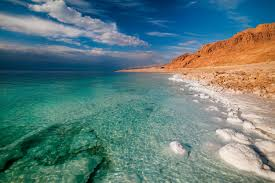
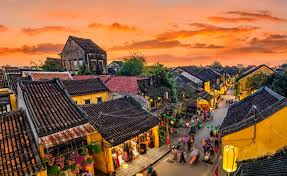
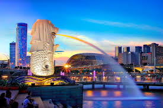

Mount Fuji,Japan
Although Mount Fuji is an active strato volcano, it has not erupted since 1700.The stunning snowcapped mountain is one of Japan's"Three hoy mountains",which are traditionally considered to hold a particular power.If this doesn't sound ominous enough, the base of the mountain is also home to Aokigahara.
Dead Sea,Israel
The dark blue waters of the Dead Sea touch the borders of both Jordan and Israel. Actually a lake despite its name, the Dead Sea sits at the lowest land elevation on Earth—over 430 meters below sea level. With a salt concentration of around 31 percent—almost 10 times saltier than the ocean —the Dead Sea is so thick, nothing can sink into it, and everyone who walks into it will naturally float.
Beijing,China

One of the most populous cities in the world, Beijing is also one of the oldest. You can get a peek into that history by walking the hutongs of Beijing, the narrow alleyways lined up with traditional homes and courtyards.China's capital is home to seven UNESCO World Heritage Sites, including the Imperial Summer Palace and its gardens, the oldest canal in the world, and the Forbidden City—a palace complex that served as the home of China's emperors for 500 years starting in the 1420s.
Hoi An, Vietnam
Most visitors arriving in Vietnam land in either Hanoi or Ho Chi Minh City, or head straight to Halong Bay and the beach—but Vietnam's best place to visit is actually a well-guarded secret.The ancient city of Hoi An is home to one of Asia's oldest trading ports and a UNESCO World Heritage Site. A major commercial stop for trading ships as far back as the 15th century, Hoi An still maintains much of its original architecture in the form of timber frame buildings, colorful French-colonial shutters, and Chinese tiled roofs.
Singapore
Singapore only gained full independence from the UK and became a sovereign state in 1965, but this brand-new country is now a financial powerhouse and one of the most fun countries to visit in Southeast Asia.From its own Universal Studios park and a 50-meter bungee jump from a tower over the beach to the Marina Bay Sands resort and its rooftop, which includes an infinity pool and a skybridge, Singapore has quickly established itself as a thrilling destination.